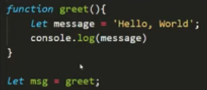
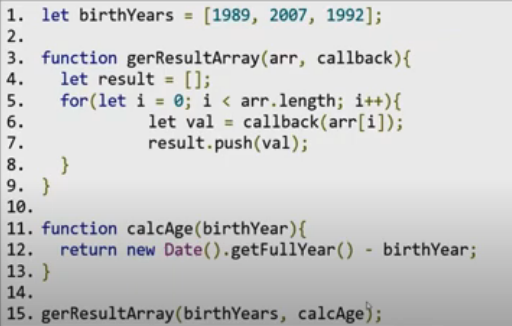
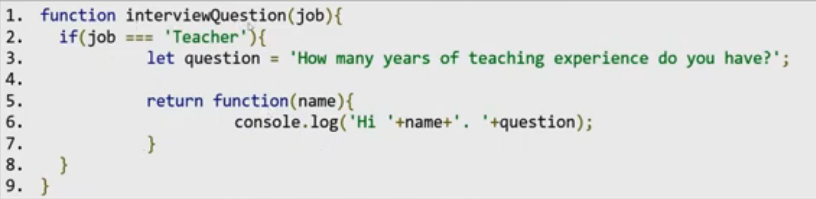

in JS, functions are objects - you can treat a function like any other value
functions are Object type, and they are stored in the Heap Memory
Default Parameters
a default value is assigned for a function's parameter(s)
function addition(a, b = 5){
return a + b;
}
addition(2, 3); // => 5
addition(2); // => 7
First class & higher order functions
First class function
a function is a value in JS and can be treated like any other value
you can assign a function to a variable, like any other value
when assigning a function to a variable, parenthesis are not used

you can pass a function as an argument to another function

you can RETURN a function from another function

Higher order function
higher order functions are functions that operates on other functions, either taking them as
arguments, invoking, or by returning them
a higher function is a function that
receives another function as argument
returns another function as output
does both of the previous two points
ex: getResultArray() is a higher order function than calcAge() function - it takes it as an
argument; same for the anonymous function returned by the interviewQuestions()
higher order functions are possible due to the existence of the first-class function concept,
supported in JS, that allows higher order functions
functions such as filter(), map(), forEach(), ... are all higher-order functions, taking as
an argument another callback function